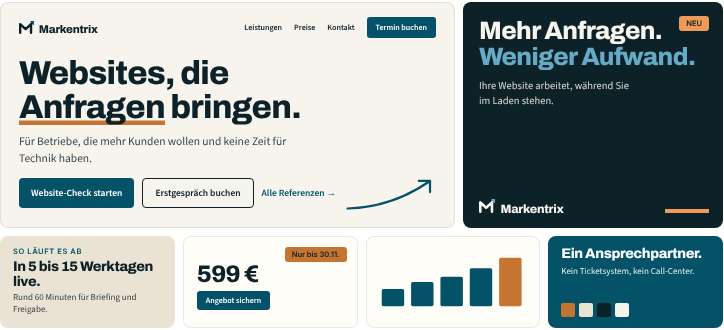
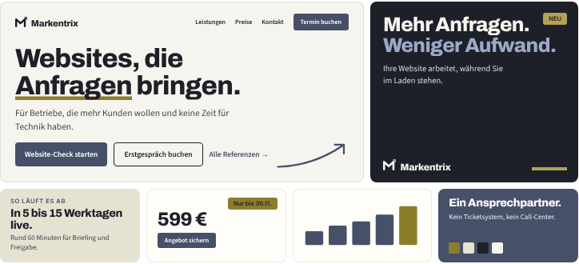
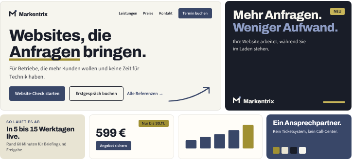
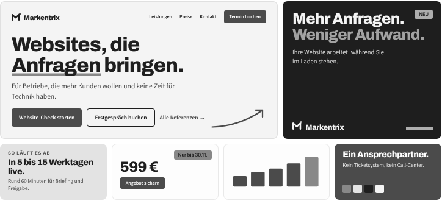

<!doctype html>
<html lang="de"><head><meta charset="utf-8"><title>Markentrix · Die Farbpalette</title>
<style>
@font-face{font-family:'Inter';font-weight:400;src:url(../src/fonts/inter-latin-400-normal.woff2)}
@font-face{font-family:'Inter';font-weight:600;src:url(../src/fonts/inter-latin-600-normal.woff2)}
@font-face{font-family:'Inter';font-weight:700;src:url(../src/fonts/inter-latin-700-normal.woff2)}
@font-face{font-family:'Archivo';font-weight:800;src:url(fonts/archivo-latin-800-normal.woff2)}
@font-face{font-family:'Source Sans 3';font-weight:400;src:url(fonts/source-sans-3-latin-400-normal.woff2)}
@font-face{font-family:'Source Sans 3';font-weight:600;src:url(fonts/source-sans-3-latin-600-normal.woff2)}
@page{size:A4 landscape;margin:0}
*{box-sizing:border-box}html,body{margin:0;background:#fff}
body{font-family:Inter,sans-serif;font-size:10px;line-height:1.45;color:#2A2F3A;-webkit-print-color-adjust:exact;print-color-adjust:exact}
.page{width:1123px;height:794px;padding:32px 44px 0;position:relative;overflow:hidden;page-break-after:always;background:#FBFBFA}
.top{display:flex;justify-content:space-between;font-size:8.5px;font-weight:600;letter-spacing:.08em;text-transform:uppercase;color:#7A8090;padding-bottom:9px;border-bottom:1px solid #E4E6EA;margin-bottom:14px}
.foot{position:absolute;left:44px;right:44px;bottom:16px;display:flex;justify-content:space-between;font-size:8.5px;font-weight:600;letter-spacing:.08em;text-transform:uppercase;color:#7A8090}
h1{font-size:24px;line-height:1.1;letter-spacing:-.02em;margin:0 0 5px;color:#14171F}
h2{font-size:13px;margin:0 0 6px;color:#14171F}h3{font-size:10.5px;margin:0 0 2px;color:#14171F}
p{margin:0 0 5px}.lead{font-size:12px;max-width:920px;margin-bottom:12px}
.box{background:#fff;border:1px solid #E4E6EA;border-radius:10px;padding:12px 15px}
.lab{font-size:7.5px;font-weight:700;letter-spacing:.09em;text-transform:uppercase;color:#7A8090;display:block;margin:0 0 5px}
table{width:100%;border-collapse:collapse}th{text-align:left;font-size:7.5px;letter-spacing:.07em;text-transform:uppercase;color:#7A8090;padding:0 8px 5px 0;border-bottom:1px solid #E4E6EA;vertical-align:bottom}
td{padding:3.8px 8px 3.8px 0;border-bottom:1px solid #E4E6EA;vertical-align:top}tr:last-child td{border:0}
ul{margin:0;padding:0;list-style:none}li{position:relative;padding-left:12px;margin-bottom:4px}li:before{content:'';position:absolute;left:0;top:.55em;width:4px;height:4px;border-radius:50%;background:#14171F}
.bar{display:flex;height:40px;border-radius:8px;overflow:hidden;border:1px solid rgba(0,0,0,.1)}
.bar div{display:flex;align-items:flex-end;padding:5px 7px;font-size:9px;font-weight:700}
.c5{display:grid;grid-template-columns:repeat(5,1fr);gap:8px}
.sw{height:62px;border-radius:8px;padding:8px 10px;font-family:Archivo;font-weight:800;font-size:14px;letter-spacing:-.02em;line-height:1.1;border:1px solid rgba(0,0,0,.08)}
.sw span{display:block;font-family:Inter;font-weight:600;font-size:8px;letter-spacing:0;opacity:.85;margin-top:2px}
.ok{color:#15803D;font-weight:700}.no{color:#B91C1C;font-weight:700}
.rec{background:#0C2128;color:#F7F4EE;border-radius:10px;padding:13px 16px}.rec h2,.rec b{color:#fff}
.chip{display:inline-block;width:10px;height:10px;border-radius:2px;vertical-align:-1.5px;margin-right:5px;border:1px solid rgba(0,0,0,.12)}
img.s{width:100%;display:block;border-radius:6px;border:1px solid #E4E6EA}
</style></head><body><div id="root"></div>
<script>
const S=/*SPEC*/;
const F=S.farben, K=S.kontraste, k=n=>String(K[n].toFixed(1)).replace('.',',')+':1';
const c=n=>`<span class="chip" style="background:${F[n].hex}"></span>`;
const cm=a=>a.join(' · ');const de=v=>Number(v).toFixed(1).replace('.',',');
const main=[['Kreide','Papierton','Grund, Weißraum','#0C2128',62],['Tiefsee','Tintenton','Text, Überschriften, dunkle Flächen','#F7F4EE',16],['Pfauenblau','Hauptfarbe','Logo-Pfeil, Knöpfe, Links, Diagramme','#fff',12],['Leinen','Flächenfarbe','Ruhige Abschnitte, Karten, Tabellenköpfe','#0C2128',7],['Kupfer','Akzentfarbe','Der eine Blickfang je Fläche','#0C2128',3]];
const d=(v,t)=>`<td>${de(v)} ${v<=t?'<span class="ok">✓</span>':''}</td>`;
document.getElementById('root').innerHTML=`
<section class="page"><div class="top"><span>Markentrix · Die Farbpalette</span><span>Ergebnis</span></div>
 <h1>Pfauenblau, Kupfer und Leinen auf Kreide und Tiefsee</h1>
 <p class="lead">Fünf Töne, die zusammengehören: ein tiefes, seltenes Blaugrün als Hauptfarbe, echtes Kupfer als Gegenpol, ein Leinenton für Flächen. Dazu ein kreideweißes Papier und ein blauschwarzer Tintenton statt neutralem Schwarz.</p>
 <div style="display:grid;grid-template-columns:1fr 1.18fr;gap:18px">
  <div>
   <div class="c5">${main.map(([n,r,a,t])=>`<div><div class="sw" style="background:${F[n].hex};color:${t}">${n}<span>${F[n].hex}</span></div><h3 style="margin-top:6px">${r}</h3><p style="font-size:9px;margin:0">${a}</p></div>`).join('')}</div>
   <div class="box" style="margin-top:12px"><span class="lab">Anteile an der ganzen Fläche</span>
    <div class="bar">${main.map(([n,r,a,t,w])=>`<div style="width:${w}%;background:${F[n].hex};color:${t}">${w>=10?w+' %':''}</div>`).join('')}</div>
    <div style="display:flex;gap:12px;flex-wrap:wrap;font-size:8.5px;margin-top:5px;color:#555">${main.map(([n,r,a,t,w])=>`<span>${c(n)}${n} ${w} %</span>`).join('')}</div>
    <p style="margin:7px 0 0">Die drei Farben stehen untereinander etwa im Verhältnis <b>4 : 2 : 1</b>. Kreide und Tiefsee sind die neutralen Töne und tragen den Rest.</p></div>
   <div class="box" style="margin-top:12px"><h2>Was sich gegenüber dem letzten Vorschlag ändert und warum</h2><table>
    <tr><td style="width:27%"><b>Petrol → Pfauenblau</b></td><td>Derselbe Charakter, aber tiefer und eine Spur blauer. Wirkt wertiger, ist seltener und trennt sich deutlich besser vom Akzent.</td></tr>
    <tr><td><b>Backsteinrot → Kupfer</b></td><td>Rot und Petrol waren fast gleich dunkel und rückten für Menschen mit Rot-Schwäche eng zusammen. Kupfer ist heller, leuchtet, und hat keinen Beigeschmack von Fehler oder Rabatt.</td></tr>
    <tr><td><b>Schwarz → Tiefsee</b></td><td>Ein Blauschwarz aus derselben Familie wie die Hauptfarbe. Dunkle Flächen wirken dadurch wie aus einem Guss statt wie ein Fremdkörper.</td></tr>
    <tr><td><b>Sand → Leinen</b>, <b>Papier → Kreide</b></td><td>Beide eine Stufe heller und weniger gelb. Das wirkt frischer und hebt alle Kontraste.</td></tr></table></div>
  </div>
  <div><span class="lab">So sieht es zusammen aus</span>
   <div class="rec" style="margin-top:12px"><h2>Warum diese Kombination</h2>
    <div style="display:grid;grid-template-columns:1fr 1fr;gap:0 18px"><div>
     <p><b>Gegenpole.</b> Blaugrün und Kupfer liegen im Farbkreis gegenüber. Schon 3 % Kupfer reichen, um den Blick zu führen.</p>
     <p><b>Vertrauen und Wärme.</b> Pfauenblau wirkt ruhig und verlässlich, Kupfer und Leinen bringen die Wärme, die zu „ein Ansprechpartner“ gehört.</p>
     <p style="margin:0"><b>Material statt Bildschirmfarbe.</b> Kupfer, Leinen, Kreide, Tinte: alles Dinge, die man anfassen kann. Das ist das Gegenteil des alten Verlaufs.</p></div><div>
     <p><b>Für jede Branche.</b> Kein Ton gehört einer Branche. Kupfer kennt die Werkstatt genauso wie die Küche.</p>
     <p><b>Selten.</b> Blau, Schwarz und Verläufe sind die üblichen Agenturfarben. Diese Paarung findet man eher bei Manufakturen.</p>
     <p style="margin:0"><b>Im Druck steigerbar.</b> Auf Visitenkarten kann der Akzent als echte Kupferfolie geprägt werden.</p></div></div></div>
  </div>
 </div><div class="foot"><span>Zur Freigabe · noch nichts umgesetzt</span><span>1 / 3</span></div></section>

<section class="page"><div class="top"><span>Markentrix · Die Farbpalette</span><span>Nachweise</span></div>
 <h1>Was gemessen ist</h1>
 <p class="lead">Die Palette ist nicht nach Gefühl entstanden. Geprüft wurden 110 Hauptfarben und 225 Akzentfarben, also 19.930 Paare. 3.247 bestanden Druck, Farbfehlsicht und Graustufen, 2.508 Varianten gingen in den Feinschliff, 16 Kombinationen habe ich im fertigen Layout verglichen.</p>
 <div style="display:grid;grid-template-columns:1fr 1fr;gap:16px">
  <div>
   <div class="box"><h2>Lesbarkeit am Bildschirm</h2><table>
    <tr><th style="width:44%">Paarung</th><th>Kontrast</th><th>Reicht für</th></tr>
    <tr><td>${c('Tiefsee')}Tiefsee auf Kreide</td><td><b>${k('Tiefsee auf Kreide')}</b></td><td>jeden Text <span class="ok">✓</span></td></tr>
    <tr><td>${c('Tiefsee')}Tiefsee auf Leinen</td><td><b>${k('Tiefsee auf Leinen')}</b></td><td>jeden Text <span class="ok">✓</span></td></tr>
    <tr><td>${c('Pfauenblau')}Pfauenblau auf Kreide</td><td><b>${k('Pfauenblau auf Kreide')}</b></td><td>jeden Text, auch klein <span class="ok">✓</span></td></tr>
    <tr><td>${c('Pfauenblau')}Weiß auf Pfauenblau</td><td><b>${k('#FFFFFF auf Pfauenblau')}</b></td><td>Knopftext <span class="ok">✓</span></td></tr>
    <tr><td>${c('Kupfer')}Kupfer auf Kreide</td><td><b>${k('Kupfer auf Kreide')}</b></td><td>Striche, Flächen, große Schrift <span class="ok">✓</span></td></tr>
    <tr><td>${c('Kupfer')}Tiefsee auf Kupfer</td><td><b>${k('Tiefsee auf Kupfer')}</b></td><td>Text auf Abzeichen <span class="ok">✓</span></td></tr>
    <tr><td>${c('Kupfer dunkel')}Kupfer dunkel auf Kreide</td><td><b>${k('Kupfer dunkel auf Kreide')}</b></td><td>kleinen Text in Kupfer <span class="ok">✓</span></td></tr>
    <tr><td>${c('Pfauenblau hell')}Pfauenblau hell auf Tiefsee</td><td><b>${k('Pfauenblau hell auf Tiefsee')}</b></td><td>Text auf dunklem Grund <span class="ok">✓</span></td></tr>
    <tr><td>${c('Kupfer hell')}Kupfer hell auf Tiefsee</td><td><b>${k('Kupfer hell auf Tiefsee')}</b></td><td>Akzent auf dunklem Grund <span class="ok">✓</span></td></tr>
    <tr><td>${c('Kupfer')}Weiß auf Kupfer</td><td><b>${k('#FFFFFF auf Kupfer')}</b></td><td><span class="no">×</span> deshalb Regel: Text auf Kupfer ist immer Tiefsee</td></tr>
    <tr><td>${c('Kupfer')}Kupfer auf Leinen</td><td><b>${k('Kupfer auf Leinen')}</b></td><td><span class="no">×</span> deshalb Regel: auf Leinen nur Kupfer dunkel</td></tr></table>
    <p style="font-size:8.5px;color:#7A8090;margin:6px 0 0">Maßstab ist WCAG 2.2: 4,5:1 für Text, 3:1 für große Schrift und grafische Elemente.</p></div>
   <div class="box" style="margin-top:12px"><h2>Druckbarkeit</h2><table>
    <tr><th style="width:23%">Farbe</th><th>CMYK gestrichen</th><th>Abw.</th><th>CMYK ungestrichen</th><th>Abw.</th></tr>
    ${['Tiefsee','Pfauenblau','Kupfer','Kupfer dunkel','Leinen'].map(n=>`<tr><td>${c(n)}<b>${n}</b></td><td>${cm(F[n].cmyk_g)}</td>${d(F[n].dE_g,1)}<td>${cm(F[n].cmyk_u)}</td>${d(F[n].dE_u,1)}</tr>`).join('')}</table>
    <p style="font-size:8.5px;color:#7A8090;margin:6px 0 0">Berechnet mit den deutschen Offset-Standardprofilen PSO Coated v3 und PSO Uncoated v3. Abweichung unter 1 ist mit bloßem Auge nicht zu sehen. Tiefsee wird auf ungestrichenem Papier etwas weniger tief (2,0), das ist bei jedem Schwarz so. Kreide wird nicht gedruckt, sie ist das Papier.</p></div>
  </div>
  <div>
   <div class="box"><h2>Farbfehlsicht und Schwarz-Weiß-Druck</h2>
    <div style="display:grid;grid-template-columns:1fr 1fr;gap:8px">
     <div><p style="font-size:8.5px;margin:3px 0 0"><b>Rot-Schwäche</b> (simuliert)</p></div>
     <div><p style="font-size:8.5px;margin:3px 0 0"><b>Grün-Schwäche</b> (simuliert)</p></div>
     <div><p style="font-size:8.5px;margin:3px 0 0"><b>Schwarz-Weiß-Drucker</b></p></div>
     <div><table style="margin-top:2px">
      <tr><th style="width:44%">Abstand Haupt- zu Akzentfarbe</th><th>bisher</th><th>neu</th></tr>
      <tr><td>normales Sehen</td><td>${de(S.trennung_alt.normal)}</td><td><b>${de(S.trennung.normal)}</b></td></tr>
      <tr><td>Rot-Schwäche</td><td>${de(S.trennung_alt['Rotschwäche'])}</td><td><b>${de(S.trennung['Rotschwäche'])}</b></td></tr>
      <tr><td>Grün-Schwäche</td><td>${de(S.trennung_alt['Grünschwäche'])}</td><td><b>${de(S.trennung['Grünschwäche'])}</b></td></tr>
      <tr><td>Graustufen</td><td>${de(S.trennung_alt.Graustufen)}</td><td><b>${de(S.trennung.Graustufen)}</b></td></tr></table>
      <p style="font-size:8.5px;color:#7A8090;margin:5px 0 0">„Bisher“ ist Petrol mit Backsteinrot. Größer ist besser, unter 10 wird es eng.</p></div>
    </div>
    <p style="margin:8px 0 0">Etwa jeder zwölfte Mann sieht Rot und Grün schwächer. In allen drei Ansichten bleiben Knopf, Akzent und Text klar unterscheidbar.</p></div>
   <div class="box" style="margin-top:12px"><h2>Wie nah ist das an „perfekt“?</h2><table>
    <tr><td style="width:30%"><b>Gemessen und bestanden</b></td><td>Lesbarkeit aller vorgesehenen Paarungen, Druckbarkeit auf beiden Papiersorten, Unterscheidbarkeit bei Farbfehlsicht und in Graustufen.</td></tr>
    <tr><td><b>Mein Urteil</b></td><td>Wirkung, Wertigkeit, Eigenständigkeit. Von allem, was ich geprüft habe, ist das die stärkste Lösung. Eine Prozentzahl dafür wäre erfunden.</td></tr>
    <tr><td><b>Noch offen</b></td><td>Ein echter Andruck bei der Druckerei, und dein Blick auf zwei Bildschirmen und einem Ausdruck. Erst danach ist es fertig.</td></tr></table></div>
  </div>
 </div><div class="foot"><span>Zur Freigabe · noch nichts umgesetzt</span><span>2 / 3</span></div></section>

<section class="page"><div class="top"><span>Markentrix · Die Farbpalette</span><span>Werte und Regeln</span></div>
 <h1>Alle Werte und die Regeln dazu</h1>
 <div style="display:grid;grid-template-columns:1.25fr 1fr;gap:16px;margin-top:12px">
  <div>
   <div class="box"><table>
    <tr><th style="width:21%">Ton</th><th style="width:11%">HEX</th><th style="width:17%">RGB</th><th>Aufgabe</th></tr>
    ${[['Kreide','Grund von Website, Dokumenten und Grafiken'],['Tiefsee','Fließtext, Überschriften, dunkle Flächen'],['Pfauenblau','Logo-Pfeil, Knöpfe, Links, Linien, Diagramme'],['Leinen','Flächen und Karten'],['Kupfer','Akzent: Strich, Abzeichen, ein hervorgehobener Wert'],['Kupfer dunkel','Kupfer als kleiner Text und auf Leinen'],['Pfauenblau hell','Pfauenblau auf dunklem Grund'],['Kupfer hell','Kupfer auf Tiefsee und auf Pfauenblau'],['Nebel','Zarte Hinweisfläche, selten']].map(([n,a],i)=>`<tr${i==5?' style="border-top:2px solid #E4E6EA"':''}><td>${c(n)}<b>${n}</b></td><td style="font-family:ui-monospace,Menlo,monospace;font-size:9px">${F[n].hex}</td><td>${F[n].rgb.join(' · ')}</td><td>${a}</td></tr>`).join('')}</table>
    <p style="font-size:8.5px;color:#7A8090;margin:6px 0 0">Die oberen fünf sind die Palette. Die unteren vier sind keine neuen Farben, sondern hellere und dunklere Stufen derselben Töne für bestimmte Untergründe.</p></div>
   <div class="box" style="margin-top:12px"><h2>Feste Regeln</h2><div style="display:grid;grid-template-columns:1fr 1fr;gap:0 18px"><ul>
    <li><b>Knöpfe sind immer Pfauenblau</b> mit weißem Text.</li>
    <li><b>Kupfer höchstens einmal je sichtbarer Fläche:</b> als Strich unter einem Wort, als Abzeichen oder als ein Wert im Diagramm.</li>
    <li><b>Text auf Kupfer ist immer Tiefsee,</b> nie Weiß.</li>
    <li><b>Kupfer als Schrift</b> nur ab 24 px. Kleiner immer Kupfer dunkel.</li></ul><ul>
    <li><b>Auf Leinen</b> steht Kupfer dunkel, nicht Kupfer.</li>
    <li><b>Auf dunklem Grund</b> gelten die hellen Stufen.</li>
    <li><b>Kupfer nie direkt auf Pfauenblau,</b> dort Kupfer hell.</li>
    <li><b>Meldungen:</b> Erfolg in Pfauenblau mit Haken. Fehler in einem reinen Fehlerrot (#B3261E) mit Symbol, nur in Formularen und nie als Gestaltungsfarbe.</li></ul></div></div>
  </div>
  <div>
   <div class="box"><h2>Im Druck</h2><ul>
    <li><b>Papier:</b> naturweiß und ungestrichen. Der Kreideton entsteht dann von selbst und wird nicht gedruckt.</li>
    <li><b>Fließtext:</b> in reinem Schwarz drucken (0 · 0 · 0 · 100), damit kleine Schrift scharf bleibt. Tiefsee erst ab 14 pt und für Flächen.</li>
    <li><b>Kupfer:</b> im Vierfarbdruck ein warmer Kupferton. Für Visitenkarten und Mappen optional als Heißfolie in Kupfer matt. Das ist dann echtes Metall.</li>
    <li><b>Einfarbig:</b> Logo in Tiefsee oder Schwarz.</li></ul></div>
   <div class="box" style="margin-top:12px"><h2>Psychologie in einem Satz je Ton</h2><table>
    <tr><td style="width:27%">${c('Pfauenblau')}<b>Pfauenblau</b></td><td>Ruhe und Verlässlichkeit von Blau, ohne dessen Kühle und ohne dessen Beliebigkeit.</td></tr>
    <tr><td>${c('Kupfer')}<b>Kupfer</b></td><td>Wärme, Handwerk, Wert. Ein Metall, kein Signalton: Es zieht an, statt zu warnen.</td></tr>
    <tr><td>${c('Leinen')}<b>Leinen, Kreide</b></td><td>Natürliche Stoffe und Papier. Wirken ehrlich und unaufgeregt.</td></tr>
    <tr><td>${c('Tiefsee')}<b>Tiefsee</b></td><td>Tiefe und Ernsthaftigkeit, weicher als reines Schwarz.</td></tr></table>
    <p style="font-size:8.5px;color:#7A8090;margin:6px 0 0">Das sind gelernte Verknüpfungen aus unserem Kulturraum, keine Messwerte.</p></div>
   <div class="rec" style="margin-top:12px"><h2>Was ich von dir brauche</h2><p style="margin:0">Deine Freigabe dieser Palette. Dann arbeite ich die Richtung „Vor Ort“ damit vollständig aus: Logo-Dateien, Schriftgrößen, Bild-CI für ChatGPT und das neu gesetzte Handbuch.</p></div>
  </div>
 </div><div class="foot"><span>Zur Freigabe · noch nichts umgesetzt</span><span>3 / 3</span></div></section>`;
</script></body></html>
